一个人的书房 2.0
Table of Contents
2022/04/08
2021/09/21
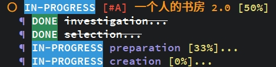
2021/09/18
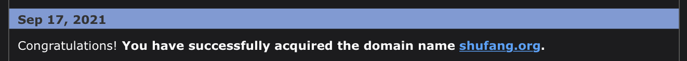
2021/09/11
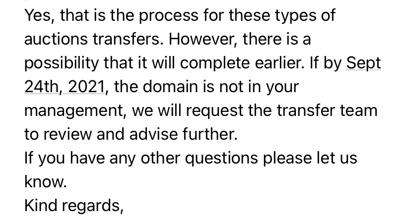
2021/08/11
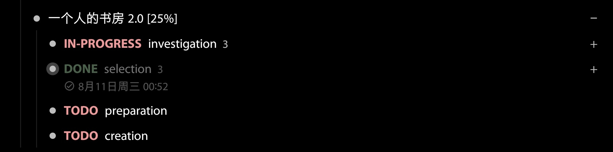
2021/08/07
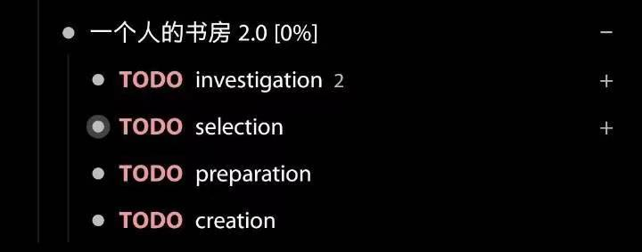
2021/08/06
我上月末想起了“一个人的书房 2.0”的计划，找 Olive 聊了一下。
凑巧的是大夏今天也发了条微博，我突然觉得这件事应该认真做一下了。
THE STORY
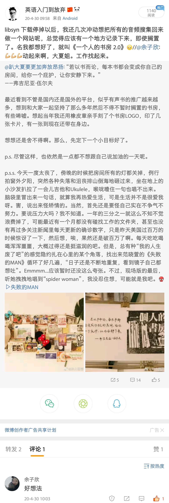
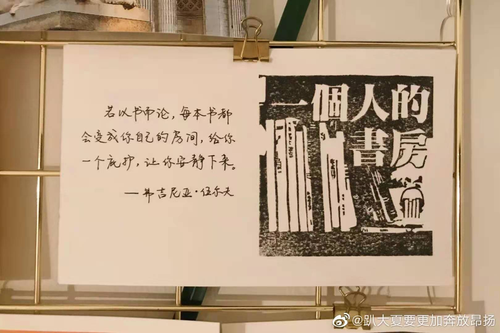
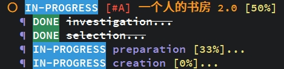
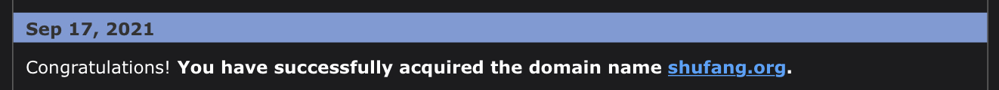
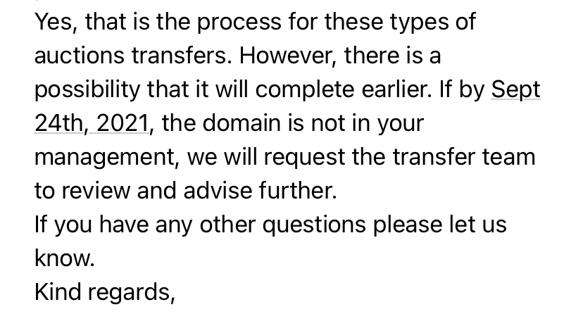
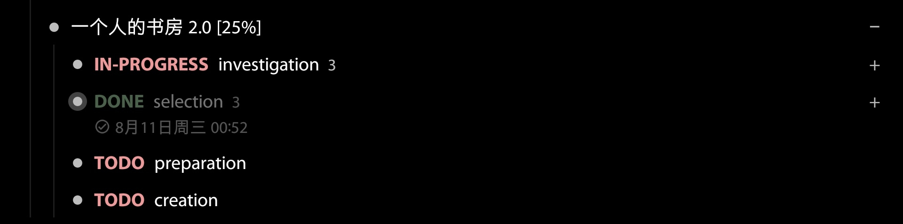
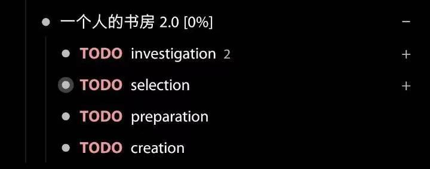
我上月末想起了“一个人的书房 2.0”的计划，找 Olive 聊了一下。
凑巧的是大夏今天也发了条微博，我突然觉得这件事应该认真做一下了。
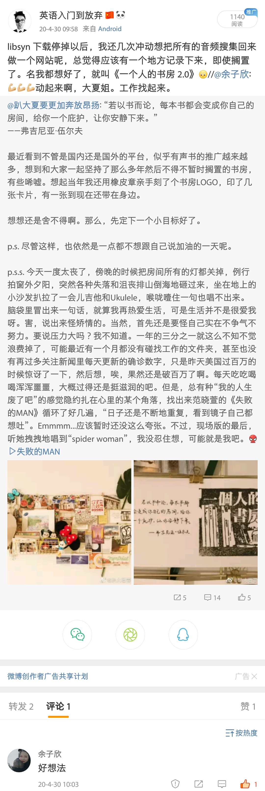
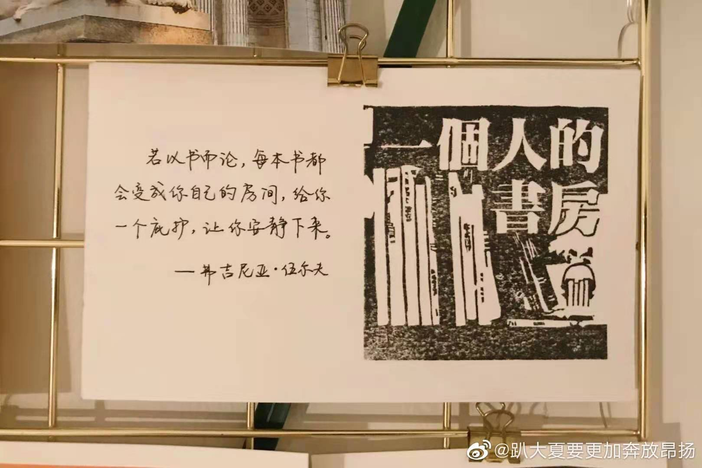